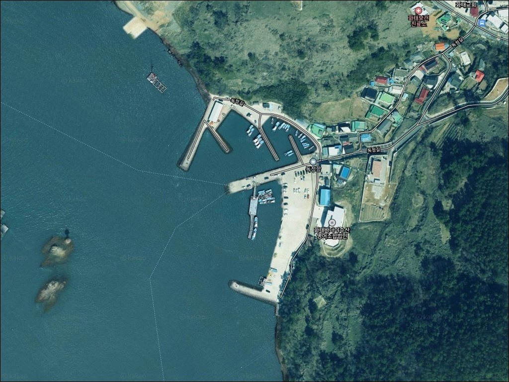
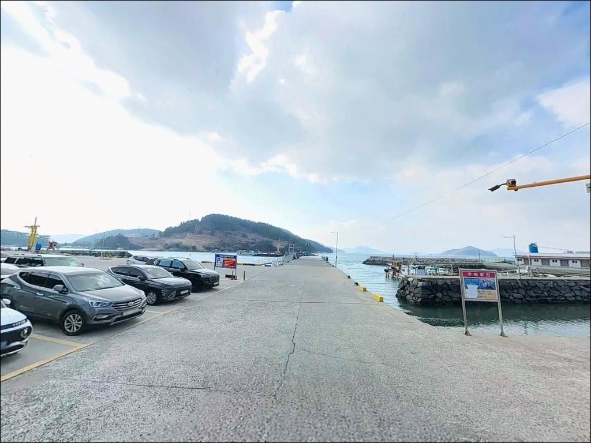
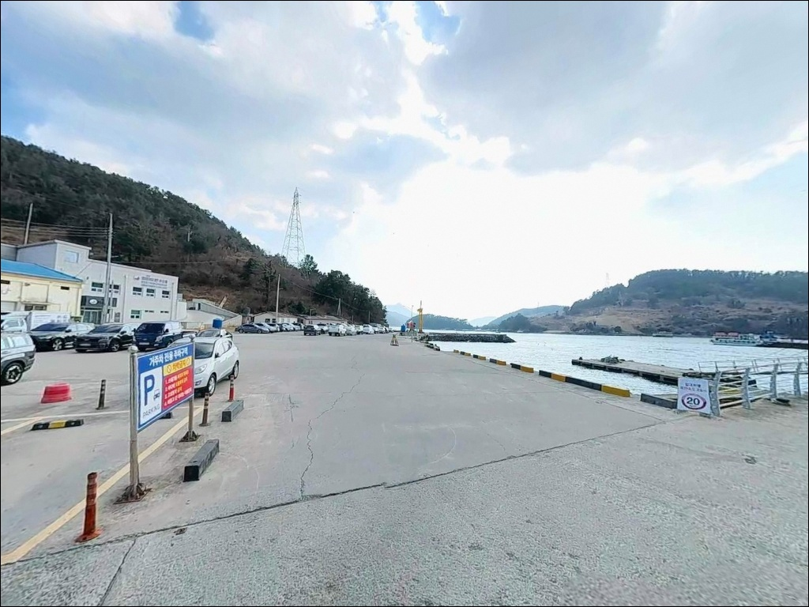
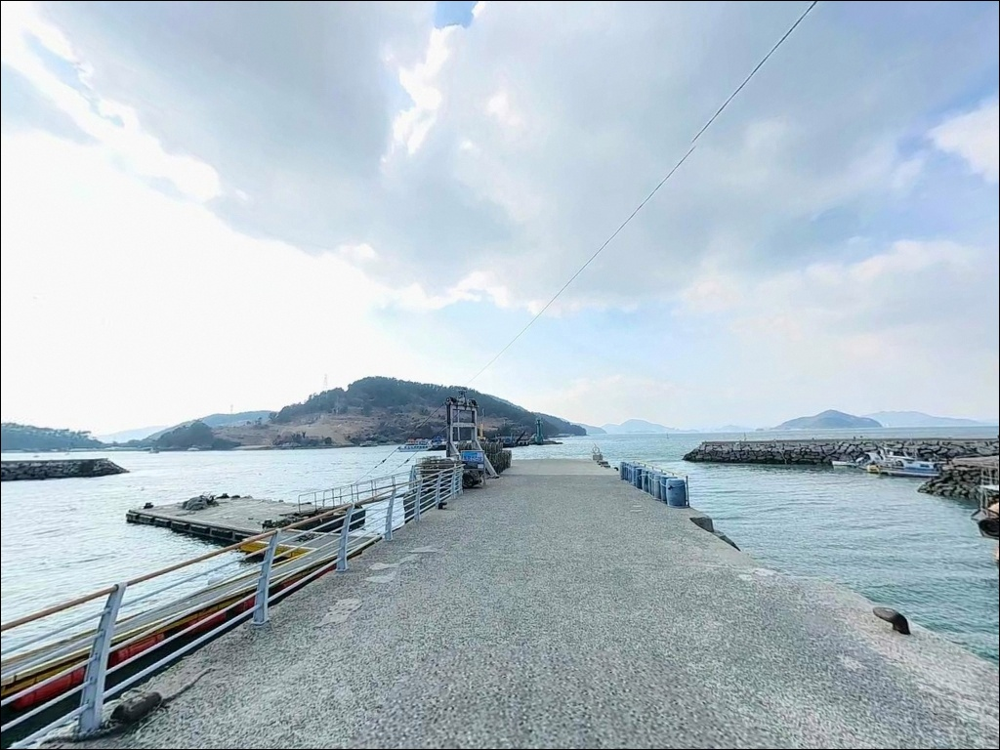
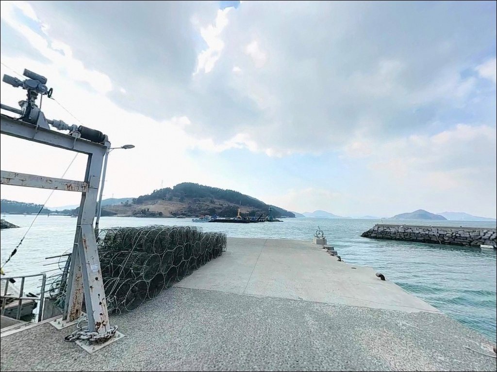
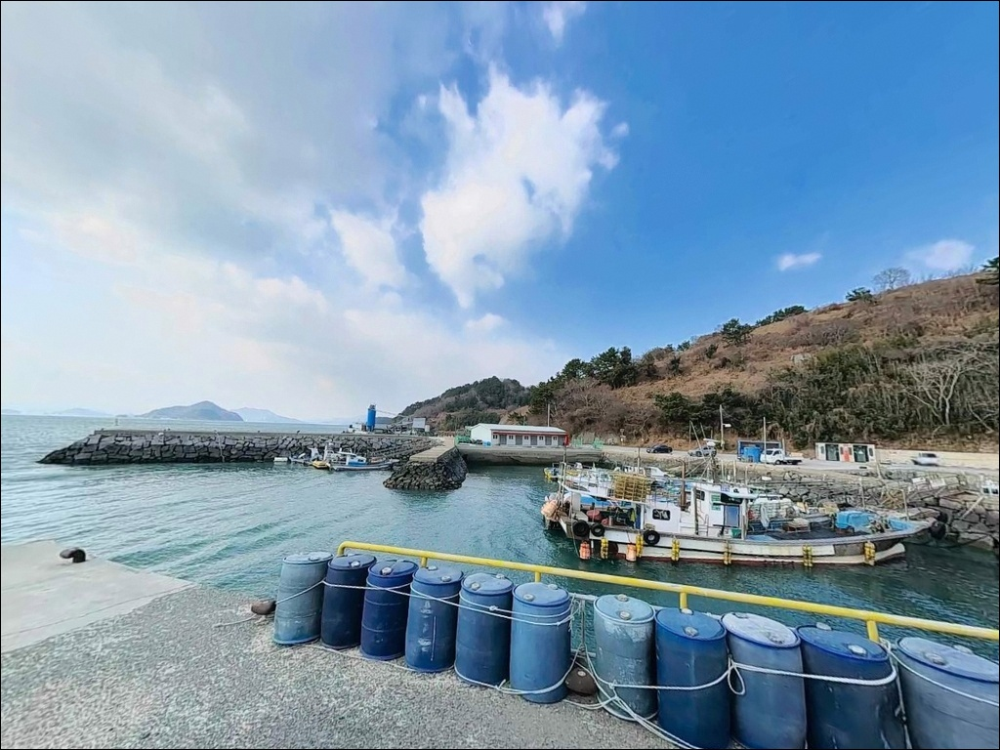
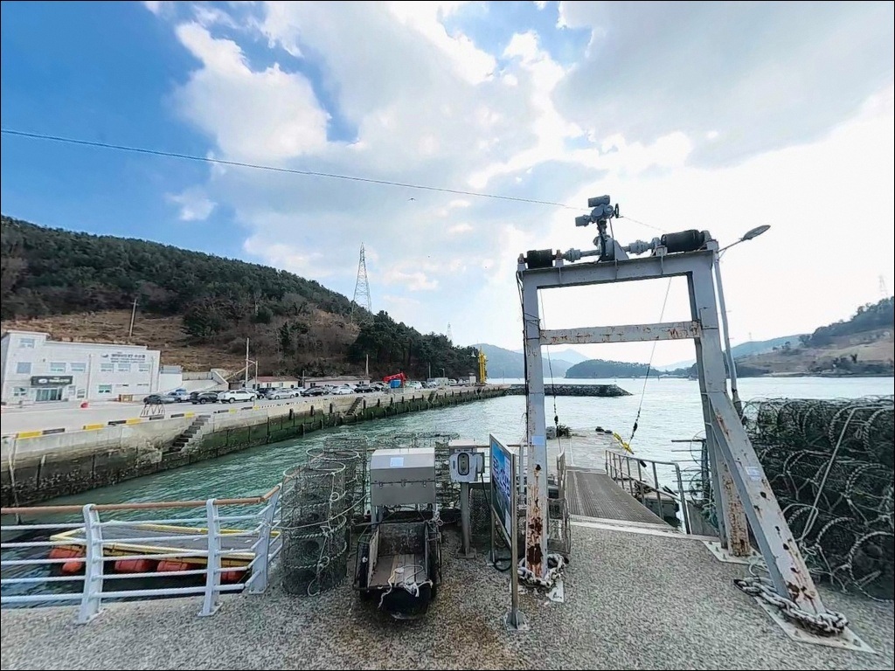
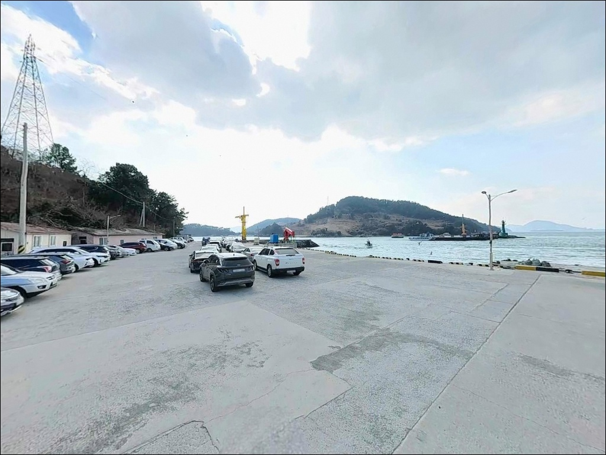
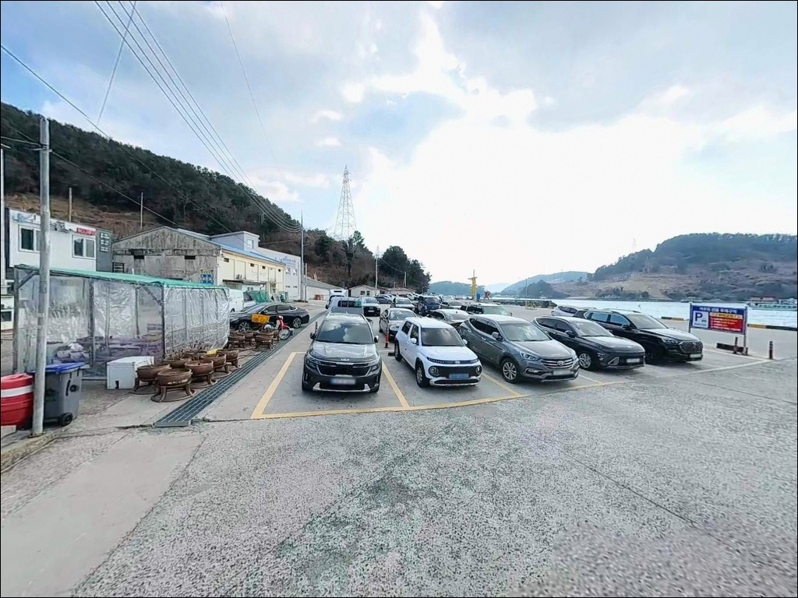

여수 화태도 독정항 찌낚시, 물돌이 완조 2시간에 모여든 감성돔 입질
이 페이지에는 광고(제휴 링크 포함)가 있으며, 광고 링크를 통해 구매하면 운영자가 판매 수익 또는 수수료를 받을 수 있습니다. 포인트 사진: 카카오맵 스카이뷰·로드뷰. 이 페이지의 지도·사진 이미지는 카카오맵의 실제 서비스 이미지와 다를 수 있습니다.


포인트 안내
독정항 (독정이방파제·독정이선착장)
전남 여수시 남면 화태리 103-3
화태도와 돌산도 사이 수로는
조류 세기 변화가 빠른 구간입니다.
물돌이 타임 전후 짧은 완조 구간을 놓치면
수심 깊은 방파제 끝단에서도
채비 컨트롤이 어려워집니다.
독정항은 물때 타이밍이 조과를 결정하는
전형적인 여수 내만 수로형 포인트입니다.
전남 여수시 남면 화태리,
화태도 서쪽 연안에 자리한 독정항은
2007년 어촌정주어항으로 지정된 공식 어항입니다.
방파제 144m, 선착장 151m 규모로
화태대교 개통 이후
차량으로 직접 접근 가능한 남해안 섬 낚시 명소로
자리 잡았습니다.
이 글은 독정항의 진입 동선,
차박 체류 여건, 물때 판단 기준,
지형별 낚시 스타일 공략 조건에 집중합니다.
조황 단정이나 특정 어종 보장은
이 글의 범위에 포함되지 않습니다.

1. 진입 동선과 포인트 접근성
독정항 진입은 화태대교를 건넌 뒤
화태길을 따라 섬 내부 도로로 진입하는 구조입니다.
화태대교 구간까지는 왕복 2차선급 도로가 이어져
대형 캠핑카 수준도 무리 없이 접근할 수 있습니다.
다만 화태도 내부 독정길은 소로 수준으로
카라반 등 초대형 견인 차량이라면
위성지도로 진입로를 미리 확인하는 편이 안전합니다.
항구 내 회차 공간은 물양장 구역에서 확보됩니다.
전진 진입 후 방파제 입구까지 내려갈 수 있고,
회차 여건도 비교적 넉넉한 구조입니다.
주차는 방파제 시작점 우측 넓은 포장 부지가
20대 이상 수용 가능한 공간으로
낚시 접근성과 주차 안정성 모두 갖추고 있습니다.
선착장 노면 쪽은 어민 작업 공간과
인접한 구역이 있습니다.
어선 이동 동선과 그물 손질 구역을
막지 않는 위치에 자리를 잡는 것이
이 항구에서 지켜야 할 기본 매너입니다.

2. 차박 환경과 야간 체류 여건
독정이 마을은 규모가 작은 어촌 생활권입니다.
민가가 항구와 인접해 있어
완전히 격리된 분위기는 아니며,
차박 프라이버시는 제한적인 환경으로
야간에 조용히 자리를 지키는 방식이 어울립니다.
마을 생활권 소음과 조명이 일부 닿기 때문에
완전한 암흑 현장형 분위기를 기대하기는 어렵습니다.
항만 내 가로등은 기본적으로 설치되어 있어
야간 낚시 이동 동선은 밝은 편입니다.
방파제 끝단으로 갈수록 조명이 약해지므로
헤드랜턴은 반드시 준비해야 합니다.
외해 직접 노출이 없는 내만 구조여서
강한 너울이나 높은 파도 영향은 적지만,
화태대교 하단 수로는 기상 악화 시 너울이 발생할 수 있어
기상 예보 확인은 필수입니다.
화태도는 다도해해상국립공원 내에 위치합니다.
국립공원 구역 안에서 지정 장소 외 야영·취사는
원칙적으로 허용되지 않습니다.
출발 전 고흥국립공원사무소 또는 여수시에 구역 확인을
먼저 마치는 것이 안전한 준비 순서입니다.


3. 주변 편의시설 및 인프라 현황
독정항 인근에서 즉시 이용 가능한 편의시설은
진입 구간 앞 소형 슈퍼 1곳입니다.
음료·간식류 수준의 현지 구매는 가능하지만,
낚시 소품이나 얼음·연료 등은
화태대교를 건너기 전에 미리 준비하는 것이
현실적인 방법입니다.
화태대교를 건너 돌산읍 방면으로 이동하면
차량 10~15분 거리에 편의점과 마트가 집중되어 있습니다.
CU 여수 돌산로점·GS25 돌산점은 24시간 운영하고,
돌산마트는 22:00까지 이용 가능합니다.
야간 출조 전 돌산읍에서 보급을 완료한 뒤
독정항으로 들어오는 동선이 가장 효율적입니다.
응급 상황이 발생할 경우
여수 본섬 방면 의료시설까지 거리가 상당합니다.
비상약품과 구명조끼는 현장 필수품으로
챙겨두는 편이 좋습니다.

4. 낚시 전 조류 방향 파악이 먼저입니다
독정항 방문에서 가장 먼저 확인할 것은
물때입니다.
화태도와 돌산도 사이 수로는
조류 세기 변화가 빠른 구간으로,
사리 전후 세찬 조류가 흐를 때는
무거운 봉돌을 써도 채비가 바닥을 잡기 어렵습니다.
물돌이 전후 완조 구간 1~2시간이
이 포인트에서 조과가 집중되는 타이밍입니다.
바다타임에서 화태리 기준 물때를 확인하고
입장 시각을 거꾸로 계산하는 것이 기본 전략입니다.
섬 지역 특성상 기상 변화가 빠른 편입니다.
화태대교 하단 수로 방향으로
바람이 강해지면 방파제 끝단 조건이
급격히 나빠질 수 있습니다.
출발 당일 아침 기상 예보를 다시 확인하고,
풍속 10m/s 이상이면 외항 끝단 진입을 재고하는
기준을 두는 편이 안전합니다.
방파제 외항 테트라포트 구간은
야간 발판이 미끄러운 자리입니다.
안전화와 구명조끼는 낮에도,
야간에는 더욱 반드시 착용해야 합니다.
채비 손실은 외항 조류 세기에 따라
잦을 수 있으므로
여분 채비를 넉넉히 챙기는 것이 기본입니다.

5. 지형 기반 낚시 여건 분석
독정항은 내항과 외항이 갈리는 방파제형 어항입니다.
서쪽 방파제 약 80m, 동쪽 방파제 약 50m가
내항 구조를 이루며,
방파제 끝단에서 수심이 급변하는
전형적인 남해안 어항 구조입니다.
선착장 정면 수심은 8~12m 이상으로 깊게 형성되어
어느 방식으로 접근하더라도
수심 조건 자체는 유리합니다.
방파제 외항 방향은
조류 흐름이 직접 걸리는 자리입니다.
물돌이 타임에 본류대가 형성되면
찌낚시 채비가 활발하게 움직이는 구간이 됩니다.
내항은 상대적으로 수면이 잔잔해
초보자도 접근하기 편한 조건이며,
양식장 가두리와 인접한 해역은
접근 가능한 외곽 라인을 확인한 뒤
자리를 잡아야 합니다.
가두리 양식장이 항구 주변 해역에
밀집 운영되는 지역이라는 점이
이 포인트의 낚시 기대감을 높이는 조건이기도 합니다.
양식 대상어가 자연 해역과 경계를 이루는 구간에서
회유성 어종이 머무는 패턴이 형성됩니다.
최신 조황은 출조 전 반드시
"독정항 낚시", "화태도 조황"으로 검색해 확인하시기 바랍니다.


6. 포인트에 어울리는 낚시 스타일
독정항 지형에서 가장 잘 맞는 방식은
감성돔을 겨냥한 찌낚시입니다.
수심 8~12m의 깊은 구조와
본류대가 형성되는 외항 방향은
고부력찌를 활용한 릴찌낚시에 최적화된 조건입니다.
겨울철 대물 감성돔 시즌에
이 포인트를 찾는 조사들이 많은 것도
이 구조 때문입니다.
에깅도 이 포인트에서 효과적인 방식입니다.
봄부터 가을까지 갑오징어 에깅이 활발하고,
무늬오징어 시즌에는 방파제 끝단에서
조류 흐름을 타며 공략하는 방식이 맞습니다.
야간에는 가로등 불빛이 닿는 선착장 주변에서
볼락·전갱이 아징이 상시 가능한 구간이 형성됩니다.
원투낚시는 방파제 끝단에서
외항 방향으로 멀리 던지는 방식이 맞습니다.
조류가 강하므로 봉돌은 평소보다
한 단계 이상 무겁게 쓰는 편이 좋습니다.
붕장어·도다리 계열을 기대해볼 수 있으며,
정조 타이밍에 채비를
바닥에 오래 안착시키는 방식이 유효합니다.

7. 대안 포인트와 플랜 B 동선
독정항 자리가 붐비거나
조류 조건이 예상과 다를 때는
화태도 묘두항이 첫 번째 대안입니다.
독정항에서 약 3km 거리로
같은 화태도 내 항구이며
해역 조건과 낚시 패턴이 유사합니다.
독정항보다 조용한 편이라
낚시 집중도를 높이고 싶을 때 이동하기 좋습니다.
화태도 남쪽의 월전항도
독정항과 약 1.5km 거리의 대안입니다.
같은 화태도 내 어항으로
원투낚시와 루어 공략이 가능한
유사한 구조를 갖추고 있습니다.
두 포인트를 당일 묶어 탐색하는 동선도
충분히 현실적입니다.
화태대교를 건너 돌산도 방면으로 이동하면
여수 돌산 권역의 방파제 포인트들이 분포합니다.
조황 정보도 상대적으로 풍부해
출조 전 "돌산 방파제 낚시 조황" 검색으로
실시간 조건을 비교한 뒤
독정항과 돌산 포인트 중 하나를 선택하는
전략도 유효합니다.

물때 한 번 맞으면
독정항의 수심이 제 값을 합니다
감성돔 찌낚시나 에깅을 즐기는 낚시인이라면
독정항의 수심 구조와 조류 패턴은
잘 맞는 지형 조건입니다.
화태대교 개통으로 차로 들어갈 수 있는
섬 낚시 포인트라는 점도
접근 피로가 적다는 장점으로 작용합니다.
원투낚시, 에깅, 야간 볼락 아징까지
복수 방식을 하나의 포인트에서
유연하게 운용할 수 있는 구조입니다.
반면 물때 계산 없이 사리 전후에 도착하거나,
국립공원 야영 규제 확인 없이
차박 체류 계획을 세우면
헛걸음이 될 수 있는 포인트이기도 합니다.
물때 확인, 국립공원 구역 사전 점검, 자급 준비,
이 세 가지를 갖추고 간다면
여수 남면 해역에서 기억에 남는 포인트가 됩니다.
항구 앞 넓은 주차 부지에 차를 세우고
물돌이 타임을 기다리며 낚싯대를 펴는 차박 여행이라면,
독정항은 여수 내만 섬 포인트 중
접근성과 낚시 여건을 동시에 갖춘
선택지입니다.